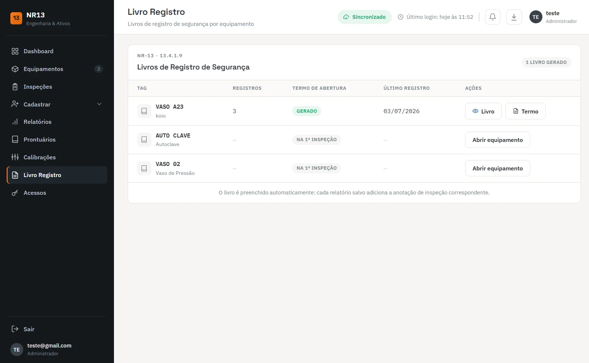
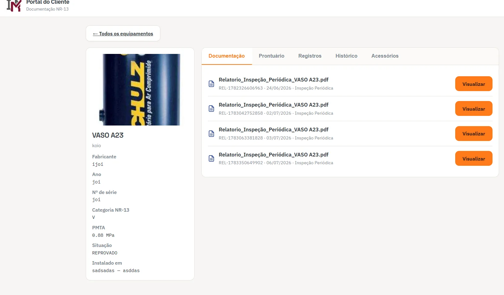

Cadastro de equipamentos
Caldeiras, vasos de pressão, autoclaves, tubulações e tanques com TAG, fabricante, ano, nº de série, categoria, PMTA, volume, fluido e resultado do teste hidrostático.

Prontuário digital, livro de registro automático e memória de cálculo ASME — em um só sistema.
O Sistema NR13 é o software de inspeção e gestão de integridade que organiza o parque de equipamentos sob pressão da sua empresa: cadastro de caldeiras, vasos de pressão, tubulações e tanques com PMTA e categoria, checklist de inspeção NR-13 pelo celular, cálculo de espessura requerida e vida remanescente conforme ASME Seção VIII, controle de calibração de PSV e manômetros e portal para o cliente baixar o laudo. Tudo pelo navegador, sem instalação.
A mesma tela que a sua equipe usa em campo: cadastro do equipamento, checklist de inspeção, memória de cálculo conforme ASME Seção VIII e o relatório saindo em PDF.
Na maioria das autuações de NR-13 que atendemos, o problema não era a condição do equipamento: era prontuário incompleto, livro de registro desatualizado, certificado de calibração vencido e relatório que ninguém acha. O Sistema NR13 nasceu para fechar essa porta.
Nada de dashboard bonito e vazio: cada tela do sistema existe porque a NR-13 pede um documento correspondente.

Caldeiras, vasos de pressão, autoclaves, tubulações e tanques com TAG, fabricante, ano, nº de série, categoria, PMTA, volume, fluido e resultado do teste hidrostático.
Instrumentos e dispositivos de segurança, respostas Sim/Não/N/A, ensaios complementares e registro fotográfico da documentação e do equipamento, salvos ainda na planta.
Espessura mínima requerida, PMTA do componente e vida remanescente, com norma base, parâmetros de entrada, fórmula e status de aprovação ou reprovação.
Termo de abertura gerado e anotação automática a cada relatório salvo. Um livro por equipamento, com data do último registro e contagem de anotações.
Cadastro de válvulas de segurança, manômetros e pressostatos, lotes de calibração por inspeção e vínculo do certificado ao equipamento.
Relatório de inspeção de segurança com capa, dados do equipamento e anexos, publicado no portal do cliente com documentação, prontuário, registros e histórico.
Imagens do sistema em operação, com dados de demonstração.

Cada equipamento vira um card com foto, TAG, unidade de medida, PMTA, categoria NR-13, volume, classe do fluido, pressão de teste hidrostático, resultado e vida remanescente. O que está pendente aparece como pendente — não como espaço em branco.
Equipamento sem cliente vinculado é sinalizado, o que evita o clássico relatório emitido para a razão social errada.
Vacuômetro, pressostato, transmissor de pressão, condição operacional dos instrumentos, ensaios complementares: tudo marcado no celular, ao lado do equipamento, com registro fotográfico da documentação e do checklist.
Acabou a inspeção, o checklist é salvo e o relatório já começa montado. Nada de transcrever prancheta molhada no escritório dois dias depois.


O sistema declara a norma base, lista os parâmetros de entrada (pressão de projeto, temperatura, diâmetro interno, raio, tensão máxima admissível, eficiência de junta, espessura nominal e margem de corrosão) e mostra a fórmula aplicada com o resultado.
Quando a espessura útil fica abaixo da requerida, ou a PMTA calculada fica abaixo da pressão de projeto, o documento sai com status de reprovação e o motivo técnico — que é exatamente o que a defesa técnica precisa ter por escrito.
Um livro por equipamento, com termo de abertura gerado, número de registros e data do último lançamento. Cada relatório salvo adiciona a anotação de inspeção correspondente, automaticamente.
É o item que mais aparece incompleto em fiscalização — e o que menos custa manter em dia quando o sistema faz o lançamento sozinho.


Os componentes do equipamento — PSV, manômetros e pressostatos — são cadastrados com número de série. A cada inspeção você abre um novo lote de calibração e calibra os mesmos componentes, mantendo o histórico ligado ao equipamento.
O certificado deixa de ser um PDF solto: fica vinculado ao ativo, ao lote e à inspeção que o exigiu.
Ficha técnica do equipamento com fabricante, ano, nº de série, categoria NR-13, PMTA, situação e local de instalação — e as abas de documentação, prontuário, registros, histórico e acessórios.
Cada relatório aparece com número, data e tipo de inspeção, pronto para visualizar. Para quem presta serviço, é diferencial comercial; para quem tem a planta, é a pasta que nunca se perde.

O sistema atende quem faz a inspeção e quem é dono do equipamento — com permissões separadas.
Padroniza o checklist entre inspetores, elimina a planilha pessoal de cada engenheiro, monta o relatório em minutos e entrega ao cliente por um portal com a sua marca. Um só lugar para todos os contratos.
Enxerga em uma tela quais equipamentos estão dentro do prazo, quais reprovaram e quais têm calibração vencida. Fiscalização, seguradora e auditoria de cliente recebem o documento no mesmo dia.
Quatro passos. O primeiro leva menos de dez minutos.
Você assina pelo checkout, recebe o acesso por e-mail e já entra no sistema para cadastrar o primeiro equipamento.
Cadastramos junto com você caldeiras, vasos, tubulações e tanques, com dados de placa e prontuário existente.
Checklist em campo pelo celular, memória de cálculo gerada e relatório montado no mesmo dia.
Livro de registro alimentado sozinho, calibrações vinculadas e cliente acessando o portal.


Assinatura online, sem proposta comercial demorada. O acesso é liberado assim que o pagamento é confirmado e a implantação começa junto com você.
É um software online de gestão e integridade de equipamentos sob pressão. Ele reúne em um só lugar o cadastro de caldeiras, vasos de pressão, tubulações e tanques, o prontuário de cada equipamento, o livro de registro de segurança, os certificados de calibração de válvulas e manômetros, os relatórios de inspeção e os prazos da próxima inspeção. O acesso é pelo navegador, no computador ou no celular.
Não. A NR-13 exige Profissional Habilitado para a inspeção de segurança e para a assinatura do relatório, e isso não muda. O sistema organiza o trabalho desse profissional: padroniza o checklist em campo, calcula PMTA e espessura requerida conforme o código de projeto, monta o relatório e mantém o histórico do equipamento rastreável. Quem responde tecnicamente continua sendo o engenheiro, com ART registrada.
Sim. O checklist de inspeção foi desenhado para uso em campo pelo celular: marcação de instrumentos e dispositivos de segurança, respostas Sim/Não/N/A, registro fotográfico da documentação e do equipamento e salvamento do checklist ainda no local. Ao voltar, o relatório já está montado no sistema.
Sim. Cada relatório de inspeção salvo adiciona automaticamente a anotação correspondente ao livro de registro daquele equipamento, junto com o termo de abertura. É o documento que a auditoria fiscal do trabalho pede junto com o prontuário — e o que mais costuma estar desatualizado nas empresas.
Sim. A memória de cálculo é gerada com a norma base declarada (por exemplo ASME Seção VIII Divisão 1, parágrafo UG-27), com os parâmetros de entrada, a fórmula aplicada, o resultado e o status de aprovação ou reprovação de cada componente. O documento sai anexado ao relatório, o que facilita a defesa técnica em fiscalização e perante seguradora.
Sim. O portal do cliente mostra, por equipamento, a ficha técnica, a documentação, o prontuário, os registros, o histórico de inspeções e os acessórios. O cliente baixa o PDF na hora em que a fiscalização pede, sem depender de e-mail antigo ou de pasta perdida na manutenção.
A assinatura custa R$ 197 por mês, com acesso total e sem limite de equipamentos cadastrados. A contratação é feita online, pelo botão de assinatura desta página: você conclui o pagamento no checkout seguro e recebe os dados de acesso por e-mail. Não há proposta comercial demorada nem taxa de implantação — o sistema já entra em uso com implantação assistida, em que cadastramos junto com você os primeiros equipamentos e acompanhamos a primeira inspeção até o relatório sair.
Assine, cadastre o primeiro equipamento e veja a memória de cálculo e o relatório saírem prontos.